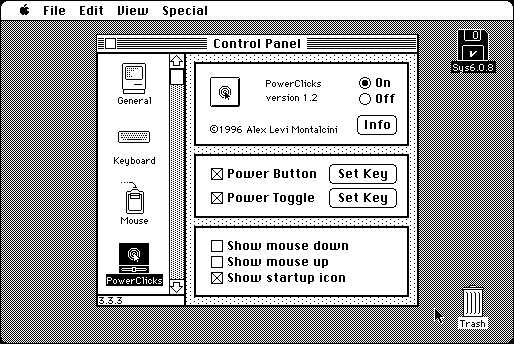

Download
power-clicks-12.zip (20K) PowerClicks 1.2 repackaged into a zipped hfs disk image and checksum file. The disk image can be mounted with Mini vMac.
power-clicks-12.hqx (25K) PowerClicks 1.2 in the original format.
copyright: Alessandro Levi Montalcini
mod date: Jul 3, 1996
license: Freeware
last known url
(gone)
It “can make a key combination act just like the mouse button”, and “can make another key combination toggle the mouse button”.

If you find these downloads useful, please consider helping the Gryphel Project, which hosts them.
Here are the md5 checksums for the downloads, signed with Gryphel Key 5:
--------- GRY SIGNED TEXT --------- 12e54762b3ab2ab72baf6670ea33866f power-clicks-12.zip 39c78a1c13eee5d2614a1547f95feb3c power-clicks-12.hqx ------- BEGIN GRY SIGNATURE ------- Gry/4Xa8CFcUzxdN/GqZqVbzlwHS3brPRGFmfBOZsJKHurBhAxk8m1YdLvVdzMbh 8pB4MZ/8cqLLYPec9elDgzcVIW+wvMj3GUGx9KmGICKUso1svymfhA1r6fFkeNK/ iDsKmUtmH7pZ81G/YKweOOqaMDjEkRbCnzhY8jFa261jE58NJ3C7fWWR70EQ6+7L -------- END GRY SIGNATURE --------